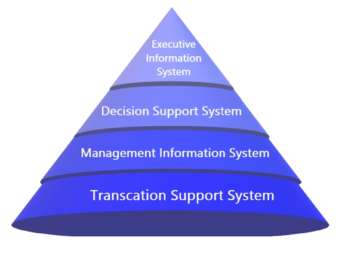

Data
Data is defined as unprocessed facts, figures, or symbols without context or meaning.
When data is used for a purpose and benefits the recipient, it becomes information.
Information
Information is simply the data that has been processed, organized, or structured to provide context, meaning, and relevance.
Information allows individuals or organizations to make insights and take actions as it conveys a specific understanding or message.
Information Systems
Information system helps collect, process, store, evaluate and distribute information for a specific purpose.
The main goal of information system is to support in the decision-making, coordination, analysis and visualization of an organization.
Types of Information Systems
EIS
•Executive Information System (EIS) is the process of continuously monitoring and analyzing the environment to provide executives with timely exposure to environmental changes.
•EIS primarily focuses on retrieving particular information regarding the operational status of the business's operations, together with particular data regarding their competitors and the marketplace.
•EIS provides the crucial feature to instantly access to a single database including all of the most recent operational and financial data for the executives to utilize.
•Senior managers are also provided by the EIS with the access to information that is relevant to their management responsibilities.
DSS
•Decision Support System (DSS) is a concept of the function of computers in decision-making.
•DSS assist each individuals decision maker's cognitive processes and an implementation approach that aims to give managers more use out of computers.
•Computer-based DSS give managers access to information and analytical tools that help them make better decisions.
MIS
•Management Information System (MIS) refers to the study of individuals, groups, technology, and their interactions.
•MIS assists in developing effective operations management and business planning through the integration of computer-based and human resources which enables data collection, storage, retrieval, communication, and utilization.
TPS
•Transaction Processing System (TPS) is a system that facilitates the monitoring, collection, storage and processing of data generated by the organization's basic business transactions.
•Transaction processing refers to the processing of business transactions by computers linked by computer networks.
•TP System serves as the computer system that hosts the transactions program.